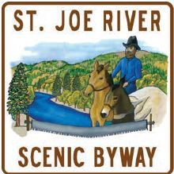

Your journey begins at the town of St. Maries, the home of the
Logger Memorial. You travel east along the shadowy St. Joe River
so named for the towering Cottonwoods which adorn the shore lines.
Among these trees are bald eagles and osprey, which use the trees
as nesting sites and perches where they launch themselves to pick
up dinner from the feast provided by "The Joe." As you travel the
first half of the byway the river is deep and still with picturesque
mountain landscapes that are captured on the watery canvas.
At St. Joe City "The Joe" becomes shallower and starts to talk to
you as it flows through rapids. The water is faster here and clear,
so dear that you can see the trout that call it home. "The Joe" is one
of Idaho's premier blue ribbon trout fisheries where you can catch
Dolly Vardens, rainbow, cutthroat and other species of trout. All
along the river adventure awaits you.
At Marble Creek interpretive center tour the logging display. In
Avery stop in and see the trout pond where rainbow trout rise to
your offerings. Visit the historic railroad depot and the refurbished
sleeper/dining car. Wildlife abounds along the river's edge, where
deer, elk, moose and bear can be seen. The St. Joe River Scenic
Byway is truly a recreational treasure, with something for everyone.